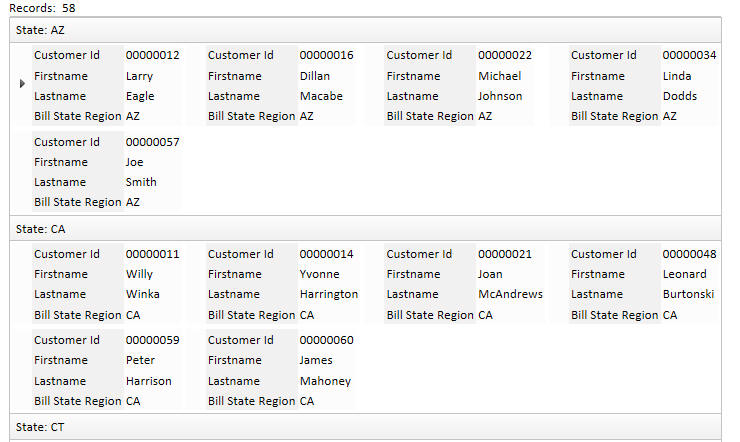
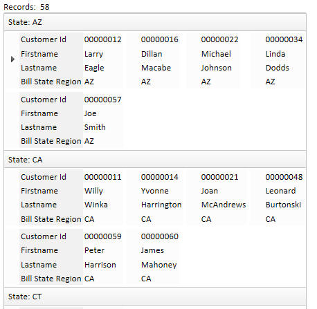

Grid Component - Form Layout - Snaking Columns
When you have the snaking column option turned on, and you are displaying row labels for fields, a new option ('Suppress repeated row labels') allows you to display the labels only for the record in column one of the snaking layout. This creates a much cleaner and narrower layout, as show in the images below.With suppress repeat turned off:

With suppress repeat turned on:
